Als afstudeeropdracht voor de opleiding Communication & Multimedia Design is er voor
Kunstcentrum De Ploeg een digitaal interactieve prototype ontworpen. De aanleiding van deze
opdracht was de terugkerende vraag van bezoekers voor meer informatie over het monument
waarin het kunstcentrum is gevestigd. Het kunstcentrum wilde in juni 2026 het verhaal ervaarbaar
maken binnen een semi-permanente expositie waarin de geschiedenis en herbestemming van het
gebouw wordt gedeeld.
De design challenge die hierbij past is:
“Ontwerp een interactieve installatie voor kunstliefhebbende bezoekers (50-70 jaar oud) van
Kunstcentrum De Ploeg, die de geschiedenis en herbestemming van het monument op een
verhalende manier ervaarbaar maakt, zodat bezoekers het verhaal en context rondom het gebouw
beter begrijpen en zich meer verbonden voelen met het kunstcentrum.”
De expositie 'Herbestemd: veranderd niet verdwenen' is nu te zien in Kunstcentrum De Ploeg van 20 juni 2026 tot en met 19 juni 2027.
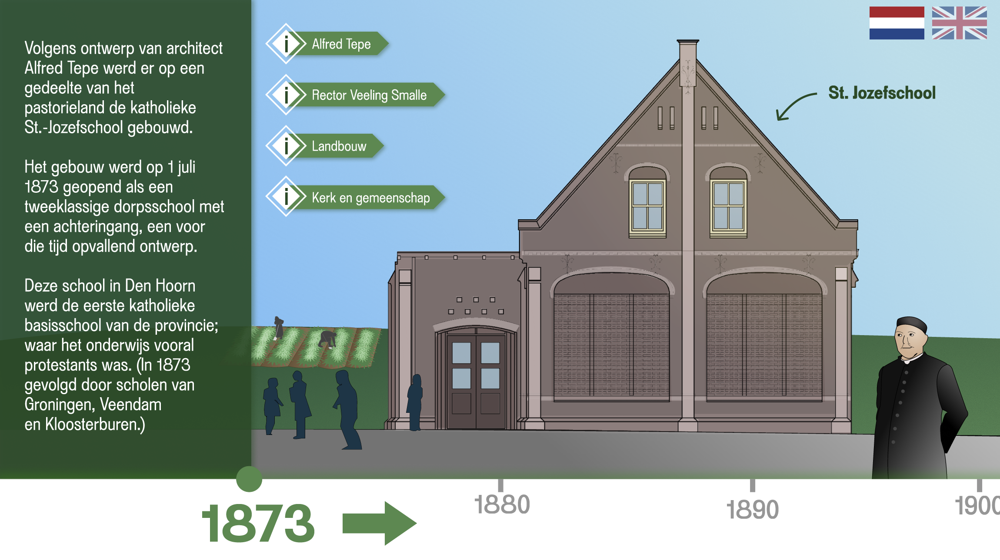
Binnen deze opdracht is een exploratief onderzoek uitgevoerd naar de geschiedenis van het monument en hoe dit op een laagdrempelige, interactieve en verhalende manier ervaarbaar gemaakt kan worden. Hiervoor zijn methodes ingezet zoals literatuuronderzoek, een trendanalyse, expertinterviews en semi-gestructureerde interviews met bezoekers binnen de doelgroep. Uit dit onderzoek kwamen ontwerpvereisten die de wensen en behoeften van de bezoekers representeerden. De doelgroep heeft in de context van de opdracht behoefte aan een volledig en visueel verhaal, eenvoudige interactie, duidelijke feedback en vooral een goede balans tussen de analoge en digitale onderdelen binnen de expositie.
Na het afronden van het onderzoek zijn er verschillende divergeer en convergeer methodes gebruikt om op drie concepten uit te komen. Deze concepten zijn beoordeeld op basis van alle ontwerpvereisten met een weighted matrix. Uit deze methode kwam het concept ‘Van verleden tot herbestemming’; een interactieve tijdlijn met een touchscreen en fysieke slider. Met de slider zou de bezoeker door de belangrijkste jaartallen voor het gebouw (tussen 1873 en 2025) kunnen navigeren. Binnen de jaartallen kunnen bezoekers zich verdiepen in het verhaal met behulp van hotspots. Deze hotspots bevatten onderwerpen zoals architectuur, de gemeenschap en het landschap rondom het gebouw.
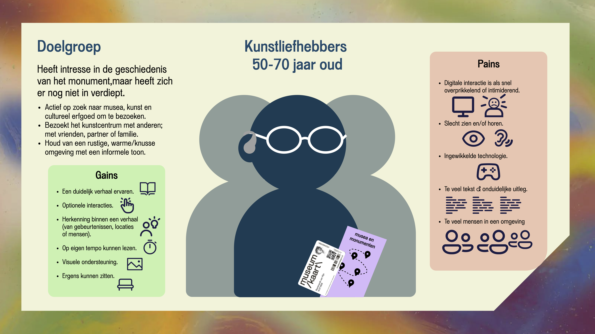
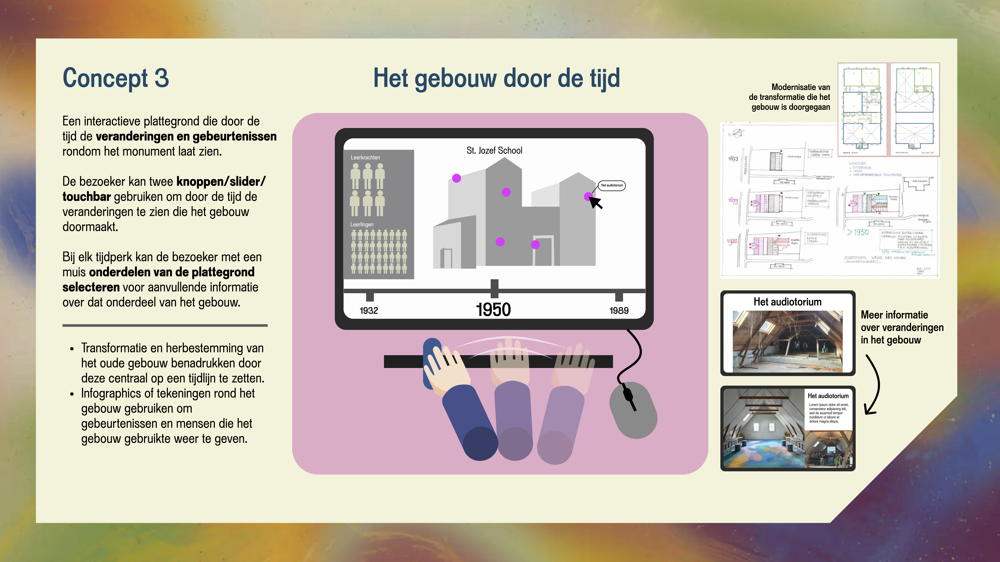
Om het concept uit te werken zijn een aantal iteraties van een prototype gemaakt. Deze iteraties zijn gemaakt in Figma en er is een fysieke slider gemaakt met behulp van een MakeyMakey. De verschillende onderdelen van het prototype zijn geëvalueerd met bezoekers binnen de doelgroep en het interne team van het kunstcentrum. Uit deze testmomenten kwam dat de interactieve tijdlijn als toegankelijk en rustig (op eigen tempo) werd ervaren. Daarbij kwamen verbeterpunten aan bod, zoals de behoefte aan een duidelijkere call-to-action en het netter maken van de slider frame.
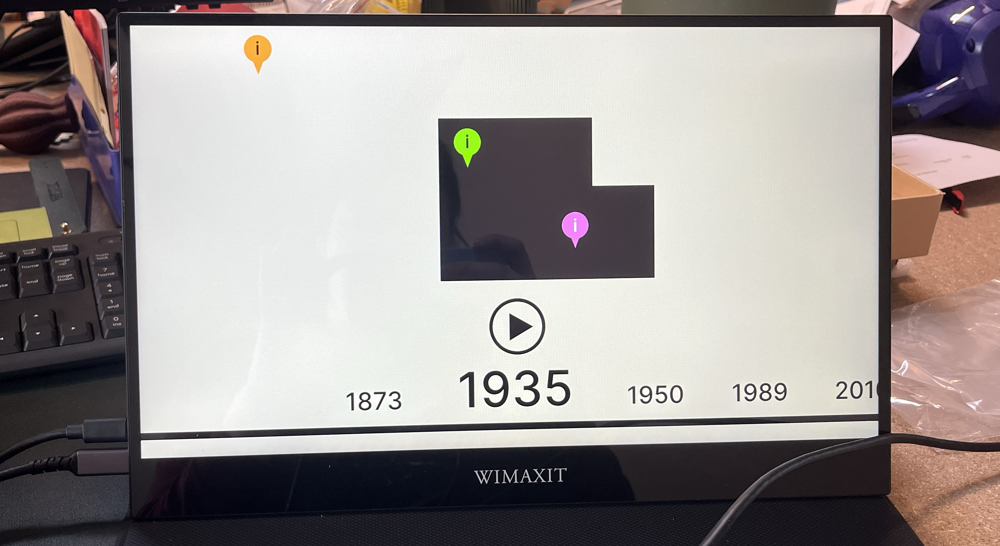
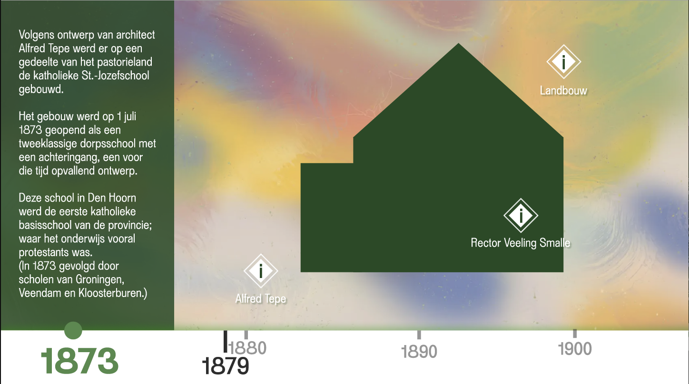
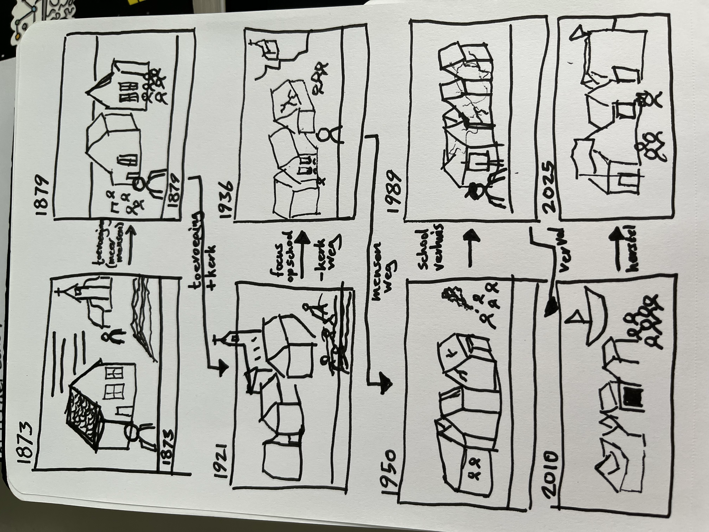
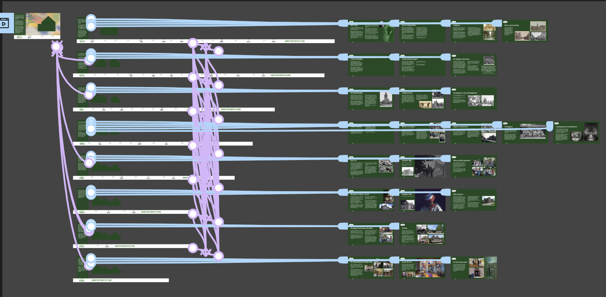
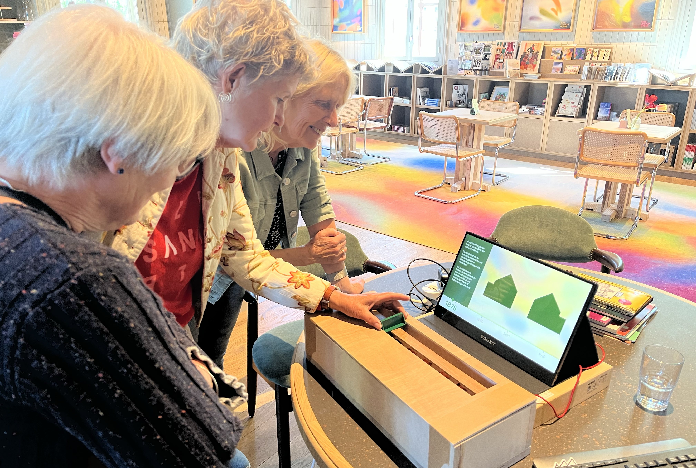
Het concept prototype vormt bij gebruik een oplossing voor de design challenge doordat het de geschiedenis en herbestemming van het monument op een interactieve en verhalende manier ervaarbaar maakt voor bezoekers. Door de ervaring ontstonden er positieve en nostalgische reacties bij bezoekers waarmee getest is, waardoor de verbinding van de bezoekers met het kunstcentrum onbewust vergroot wordt.
Het eindresultaat van deze opdracht is nu te zien op de eerste verdieping van Kunstcentrum De Ploeg. Het ontwerpprocesverslag kan worden gestuurd via de mail op aanvraag.
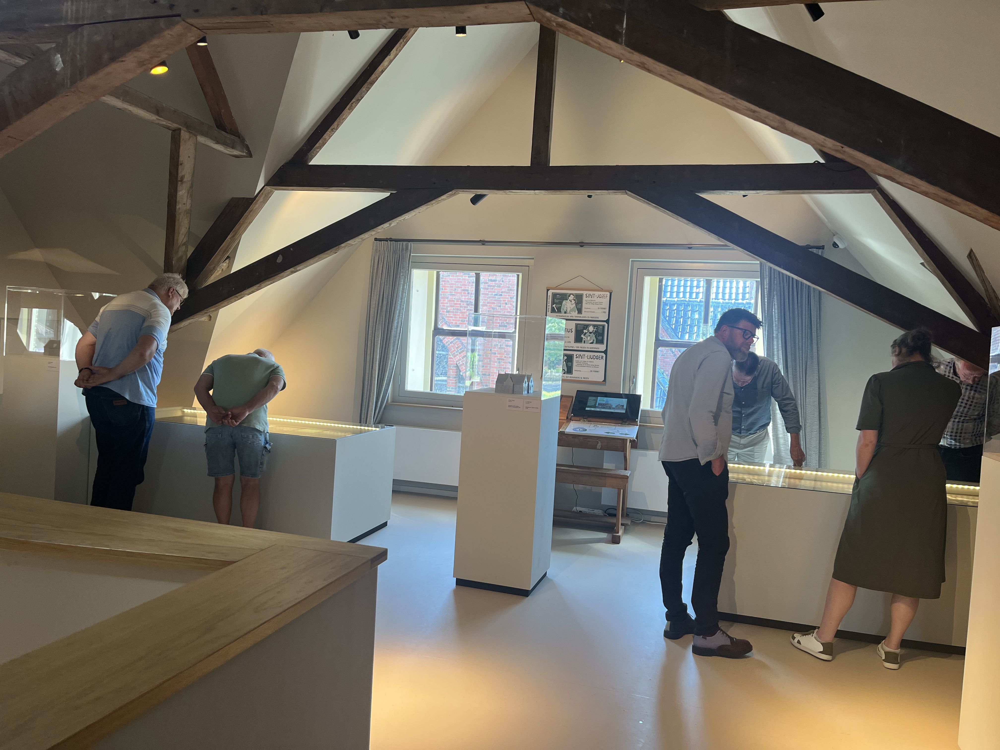
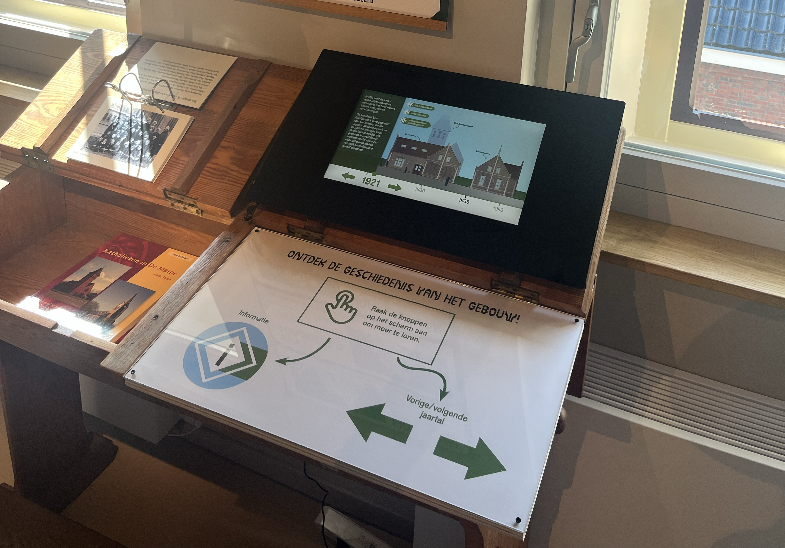
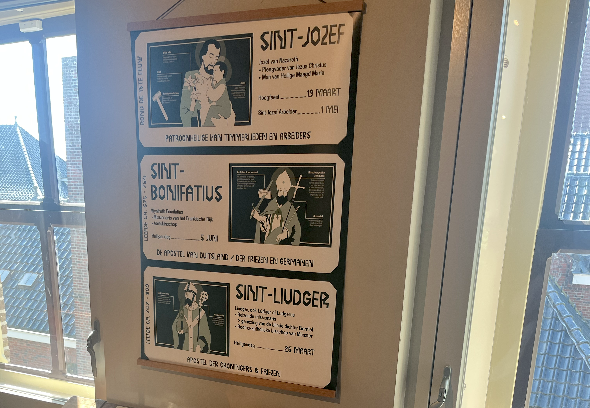